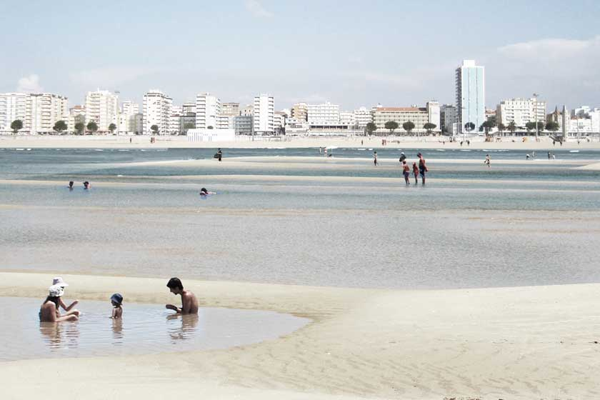

As Praias
FORA + Polígono
Competition - Urban Plan - Figueira da Foz- 2011
The sand should not be assumed as just another real estate opportunity. The huge potential of the sand lies on its genesis: the possibility of the beach. Therefore, following the same artificial manipulation processes that generated this new territory, it is now possible to bring the beach back to the city, by flooding the central area of the sand.
The rapprochement of water and city, contributes significantly for the revaluation of the water front, while releasing the atlantic beach front from the urban pressure, allowing for the consolidation and rebirth of the fragile native natural systems. An effective control of the dunes movements, through traditional processes of staking and fencing, will lead to the appearance of a new artificially made landscape. The relation between the city front and the beach is now an object of negotiation, minimizing the barrier effect of the extensive “sandscape”. The occasional erasing of the frontier between city and sand allows for new multifunctional territories to happen, where beach activities merge with the city. The result is a beach with simultaneous identities: urban and atlantic.

Team: João Moura Fagulha, João Prates Ruivo, Raquel Maria Oliveira + André Albuquerque, Pedro Snow (Polígono). Client: Município da Figueira da Foz.